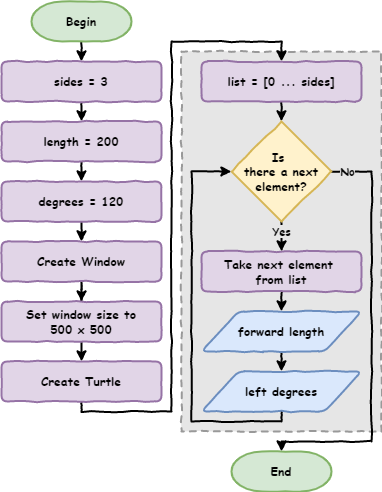
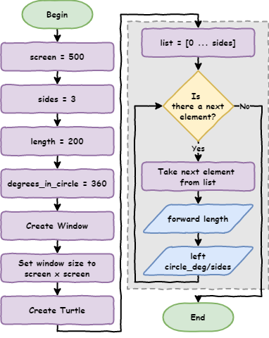
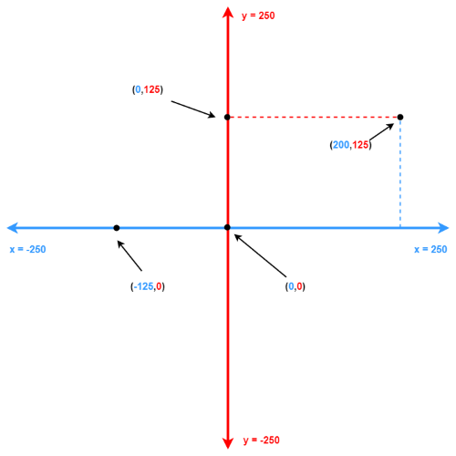
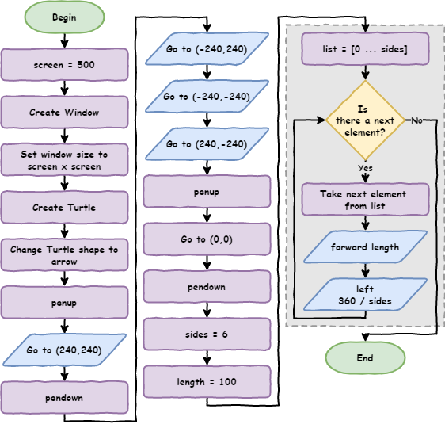

Python Turtle - Lesson 3#
In this lesson you will learn:
about storing values in variables
when and how to use variables
about screen coordinates
how to use coordinates to move the turtle
how to move the turtle without drawing a line
Part 1: Variables#
Conventional range#
Before we start looking at variables, we need to use range in a more conventual way.
Previously, we would use the following code to print four numbers.
1for index in range(1, 5):
2 print(index)
What is index?
index is a programming convention that represents a counter in a loop. You can call it anything you want, but the convention is to call it index.
If you run the code you get the following.
1
2
3
4
If we were only concerned about the number of times a loop iterates, we could use the following.
1for index in range(0, 4):
2 print(number)
This will produce:
0
1
2
3
The loop still has four iterations. The difference is, it starts counting at 0.
If the range function is not given a starting number, it will start at 0.
So we could just use the following.
1for index in range(4):
2 print(number)
This is the way that range is conventionally used in Python.
Replace magic numbers#
Below is a solution for lesson 2 exercise 1 (there are many possible solutions).
Create a new file named lesson_3_pt_1.py and enter this code.
1import turtle
2
3window = turtle.Screen()
4window.setup(500, 500)
5my_ttl = turtle.Turtle()
6
7for index in range(4):
8 my_ttl.forward(100)
9 my_ttl.left(90)
What do we need to change in the code sot the turtle draws a triangle with a length of 200 for each side?
Try and work it out before looking at the code below.
1import turtle
2
3window = turtle.Screen()
4window.setup(500, 500)
5my_ttl = turtle.Turtle()
6
7for index in range(3):
8 my_ttl.forward(200)
9 my_ttl.left(120)
What values did we change and what do those numbers represent?
4→3representing the number sides.100→200representing the length of the sides.90→120representing the degrees the Turtle has to turn.
If I wanted to make a hexagon, or any other shape, I would need to change these values each time.
In programming these are called magic numbers. A magic number is a hard coded value that appears in a program.
Magic numbers are not good. If someone else were to look at my code, they would need to work out what the 3, 200 and 120 meant. Additionally, imagine my program drew 1000 squares. If I wanted to change these to triangles, I would have to make 3000 edits.
To write better code we remove magic numbers by giving them labels called variables.
Adjust your code in lesson_3_pt_1.py to match the code below.
1import turtle
2
3sides = 3
4length = 200
5degrees = 120
6
7window = turtle.Screen()
8window.setup(500, 500)
9my_ttl = turtle.Turtle()
10
11for index in range(sides):
12 my_ttl.forward(length)
13 my_ttl.left(degrees)
PRIMM
Predict what will happen when you run the code
Run the code and see if your predictions were correct.
sides,lengthanddegreesare all variables. Let’s investigate their use in the code.
First, the flowchart for our adjusted program:

Code breakdown:
sides = 3creates the variablesidesand assigns the value of3to it.length = 200creates the variablelengthand assigns the value of200to it.degress = 120creates the variabledegreesand assigns the value of120to it.for i in range(sides):substitutessideswith the value assigned to it so that the line becomesfor index in range(3).my_ttl.forward(length)substituteslengthwith the value assigned to it. The line becomesmy_ttl.forward(200).my_ttl.left(degrees)substitutesdegreeswith the value assigned to it. The line becomesmy_ttl.left(120).
Naming rules
Python has very specific rules for what names you can use for variables:
names can only contain letters, numbers and the
_characternames cannot contain spaces
names cannot start with a number
names are case sensitive (eg.
ageis not the same asAge)
Now that we are using variables, we can copy the for loop and use it as many times as we want. The values for sides, length, and degrees will always use the values we assigned to the at the beginning.
In programming this is called a single point of truth. This means, if we change the value assigned to sides, we can change the value for uses of the variable sides. Same for length and degrees.
Change lesson_3_pt_1.py so it draws a hexagon with a side length of 100.
Your code should look like:
1import turtle
2
3sides = 6
4length = 100
5degrees = 60
6
7window = turtle.Screen()
8window.setup(500, 500)
9my_ttl = turtle.Turtle()
10
11for index in range(sides):
12 my_ttl.forward(length)
13 my_ttl.left(degrees)
No ‘meat space’ calculations#
In creating our hexagon, how did we know that degrees needed to be 60?
You may have worked it out in your head or used a calculator. There are flaws on both approaches.
head calculations can be incorrect
getting a calculator is a waste of time
We can use Python to do the calculations.
Python calculations
Python has a wide range of arithmetic operations.
To see them all, check out W3Schools’s Python Arithmetic Operators page
The value assigned to degrees is 360 divided by the number assigned to sides. In code we would write that as degrees = 360 / sides
Let’s put that into our code at line 5:
1import turtle
2
3sides = 6
4length = 100
5degrees = 360 / sides
6
7window = turtle.Screen()
8window.setup(500, 500)
9my_ttl = turtle.Turtle()
10
11for index in range(sides):
12 my_ttl.forward(length)
13 my_ttl.left(degrees)
Remove unnecessary variables#
Another good programming practice is to remove unnecessary variables.
Do we need the degrees variable? Could we place the calculation inside the for loop instead?
If we remove line 5 by moving the calculation to line 10, our code will look like the following.
1import turtle
2
3sides = 6
4length = 100
5
6window = turtle.Screen()
7window.setup(500, 500)
8my_ttl = turtle.Turtle()
9
10for index in range(360 / sides):
11 my_ttl.forward(length)
12 my_ttl.left(degrees)
Are there any more magic numbers? See if you can find any more.
1import turtle
2
3screen = 500
4sides = 6
5length = 100
6CIRCLE_DEG = 360
7
8window = turtle.Screen()
9window.setup(screen, screen)
10my_ttl = turtle.Turtle()
11
12for index in range(sides):
13 my_ttl.forward(length)
14 my_ttl.left(CIRCLE_DEG / sides)
The flowchart for this code now looks like:

In line 6 we have created another variable called CIRCLE_DEG and assigned it 360. We have capitalised the name because the value of 360 will never change, no matter what shape we wish to draw. We call variables whose values doesn’t change constants. In Python’s naming conventions we capitalise constants.
Naming conventions
Python’s naming conventions are different from the naming rules. If you break a naming rule, your program will cause a syntax error. If you break naming convention your program will still work.
In programming we use naming conventions to make your code easier to read and understand.
Variable naming conventions:
Use descriptive names that explains the value stored in them
d = 30→ baddegrees = 30→ betterdegrees_celsius = 30→ best
Use snake case for multiple word names:
replace the spaces with the
_characteronly use lower case letters
this_is_snake_case
CAPTIALIZE names of constants (variables whose value will not change)
Do not use the names of keywords (eg.
print,for, etc)
Part 1 Exercises#
In this course, the exercises are the make component of the PRIMM model. Work through the following exercises and make your own code.
Exercise 1#
Download lesson_3_ex_1.py file and save it to your lesson folder. Below is its code.
1import turtle
2
3#################################################
4## Change the variable values to draw a square ##
5#################################################
6
7screen = 500
8sides = 6
9length = 100
10
11window = turtle.Screen()
12window.setup(screen, screen)
13my_ttl = turtle.Turtle()
14
15for index in range(sides):
16 my_ttl.forward(length)
17 my_ttl.left(360 / sides)
Follow the instructions in the comments and change the code so it draws a square
Exercise 2#
Download lesson_3_ex_2.py file and save it to your lesson folder. Below is its code.
1import turtle
2
3#################################################
4## Change the variable values to draw a circle ##
5#################################################
6
7screen = 500
8sides = 6
9length = 100
10
11window = turtle.Screen()
12window.setup(screen, screen)
13my_ttl = turtle.Turtle()
14
15for index in range(sides):
16 my_ttl.forward(length)
17 my_ttl.left(360 / sides)
Follow the instructions in the comments and change the code so it draws a circle
Exercise 3#
Download lesson_3_ex_3.py file and save it to your lesson folder. Below is its code.
1import turtle
2
3###################################################
4## Change the variable values to draw a pentagon ##
5###################################################
6
7screen = 500
8sides = 6
9length = 100
10
11window = turtle.Screen()
12window.setup(screen, screen)
13my_ttl = turtle.Turtle()
14
15for index in range(sides):
16 my_ttl.forward(length)
17 my_ttl.left(360 / sides)
Follow the instructions in the comments and change the code so it draws a pentagon.
Part 2: Coordinates#
Maintainability#

Maintainability refers to how easy your code is to understand for other programmers. This is important. The other programmer may be:
someone trying to help you
your teacher trying to mark your work
even your future self in six months’ time
Before we keep going, we should tidy the code up by implementing some good coding principles.
We will:
group code under their functionality (what they do)
use comments to signpost this functionality
Adjust your code in lesson_3_pt_1.py so it looks like the code below
1import turtle
2
3# set up screen
4screen = 500
5window = turtle.Screen()
6window.setup(screen, screen)
7
8# create turtle instance
9my_ttl = turtle.Turtle()
10my_ttl.shape("arrow")
11
12# shape parameters
13sides = 6
14length = 100
15DEGREES_IN_CIRCLE = 360
16
17# draw the shape
18for index in range(sides):
19 my_ttl.forward(length)
20 my_ttl.left(DEGREES_IN_CIRCLE / sides)
Anyone who reads the program will know where the code is that deals with the functionality of:
setting up the screen
creating the turtle instance
defining the shape parameters
drawing the shape
Save the file as lesson_3_pt_2.py (File → Save as…).
How Turtle coordinates work#
Imagine the Turtle window as a piece of graph paper that measured in pixels. Our screen is set to 500px wide and 500px high (px is the recognised abbreviation for pixels). Turtle uses x to represent horizontal values, and y to represent vertical values. So, we could instead say the window’s x = 500 and its y = 500
In computing, we would represent these coordinates as (500, 500) where the first value is x and the second values is y.
What’s an immutable tuple?
Values like (500,500) are called tuples. Tuples are like a list that we learnt about in lesson 2. The main difference is that you can change the values in a list, but you can’t change the values in a tuple.
In computer science, if you can’t change a value of something, it is called immutable. We would say that tuples are immutable.
Tuples start with (, end with ) and a , separates the elements.
For our Turtle window of (500,500) we have x values ranging from -250 to 250 and y values also ranging from -250 to 250.
It looks like this:

Important to note:
the centre of the screen is the origin of
(0,0)moving up from the centre, the
yvalue increases to a maximum of250which is500 / 2moving down from the centre, the
yvalue decreases to a minimum of-250starting from the centre and moving left
xincreases in value to a maximum of250starting from the centre and moving right
xdecreases to a minimum of-250every pixel in the window can be referred to by a combination of it’s
xvalue andyvalue. For example the(200,125).
In summary:
↑ increases
y↓ decreases
y→ increases
x← decreases
x
Now that we know coordinates we can tell our turtle to go to a specific coordinates.
Using goto() to draw#
Make the following adjustments in lesson_3_pt_2.py:
add
my_ttl.goto(0,125)toline 16put a
#in front oflines 19to21
1import turtle
2
3# set up screen
4screen = 500
5window = turtle.Screen()
6window.setup(screen, screen)
7
8# create turtle instance
9my_ttl = turtle.Turtle()
10my_ttl.shape("arrow")
11
12# shape parameters
13sides = 6
14length = 100
15
16my_ttl.goto(0, 125)
17
18# draw shape
19# for index in range(sides):
20# my_ttl.forward(length)
21# my_ttl.left(360 / sides)
PRIMM
Predict what you think will happen
Run the code. Did it do what you predicted?
Investigate the by unpacking the changes:
line 16my_ttl.goto(0,125)tells your turtle to move to the position ofx = 0andy = 125.the
#at the beginning oflines 19to21turns the code into comments, which means Python will ignore them. This practice is called commenting out code. It can be useful for debugging.
Modify the code so that your turtle moves to all the points in the coordinates diagram above.
Change lesson_3_pt_2.py so that it looks like same as below.
1import turtle
2
3# set up screen
4screen = 500
5window = turtle.Screen()
6window.setup(screen, screen)
7
8# create turtle instance
9my_ttl = turtle.Turtle()
10my_ttl.shape("arrow")
11
12# draw boarder
13my_ttl.goto(240, 240)
14my_ttl.goto(-240, 240)
15my_ttl.goto(-240, -240)
16my_ttl.goto(240, -240)
17my_ttl.goto(240, 240)
18my_ttl.goto(0, 0)
19
20# shape parameters
21sides = 6
22length = 100
23
24# draw shape
25for index in range(sides):
26 my_ttl.forward(length)
27 my_ttl.left(360 / sides)
PRIMM:
Predict what you think will happen, and then run the code. Did it do what you predicted?
Investigate the code by changing aspect of the code.
Using penup and pendown#
Now we have a border around our drawing. There is an annoying line where the turtle moves from the centre of the window to the border. Luckily, we can get rid of it.
<img style=”border:1px solid black” align=”left” src=”./assets/penup.png)
When we write, we do not leave trailing lines because we lift our pen up to move. We then put our pen back down to keep writing. Turtle can do the same this with its penup and pendown functions.
Change you code by adding the code below on lines 13, 15, 19, and 21
1import turtle
2
3# set up screen
4screen = 500
5window = turtle.Screen()
6window.setup(screen, screen)
7
8# create turtle instance
9my_ttl = turtle.Turtle()
10my_ttl.shape("arrow")
11
12# draw boarder
13my_ttl.penup()
14my_ttl.goto(240, 240)
15my_ttl.pendown()
16my_ttl.goto(-240, 240)
17my_ttl.goto(-240, -240)
18my_ttl.goto(240, -240)
19my_ttl.pen(up)
20my_ttl.goto(0, 0)
21my_ttle.pendown()
22
23# shape parameters
24sides = 6
25length = 100
26
27# draw shape
28for index in range(sides):
29 my_ttl.forward(length)
30 my_ttl.left(360 / sides)
Predict what you think will happen, then run the code.
Here is the flowchart to help with your prediction.

Part 2 Exercise#
In this course, the exercises are the make component of the PRIMM model. So work through the following exercise and make your own code.
Exercise 4#
Download lesson_3_ex_4.py file and save it to your lesson folder. Below is its code.
1import turtle
2
3# set up screen
4screen = 500
5window = turtle.Screen()
6window.setup(screen, screen)
7
8# create turtle instance
9my_ttl = turtle.Turtle()
10my_ttl.shape("arrow")
11
12###################################
13## Using the turtle commands you ##
14## have learnt, draw a house. ##
15###################################
Follow the instructions in the comments and use your turtle knowledge to draw a house. Remember to apply the DRY principle.